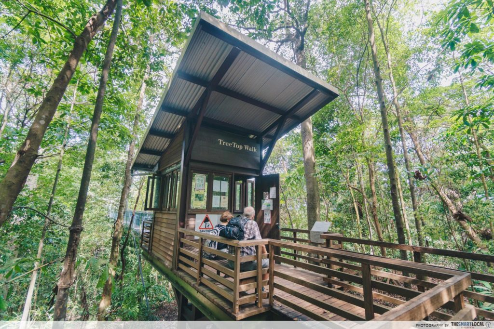
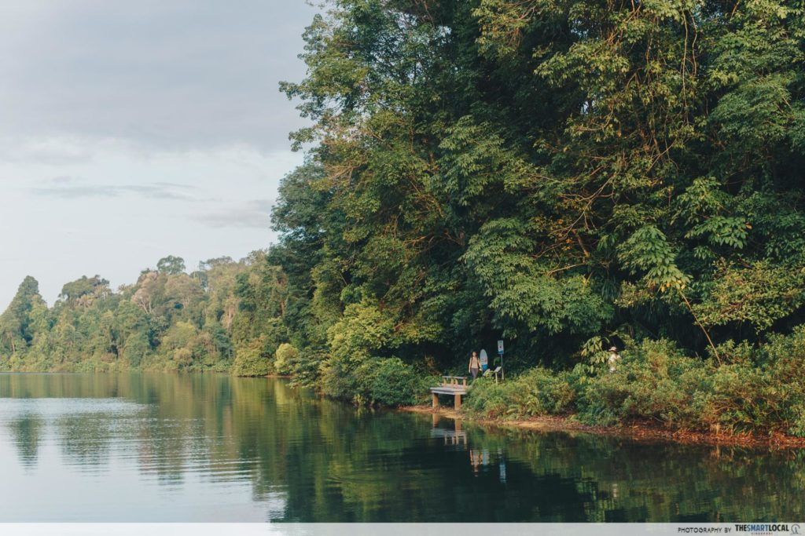
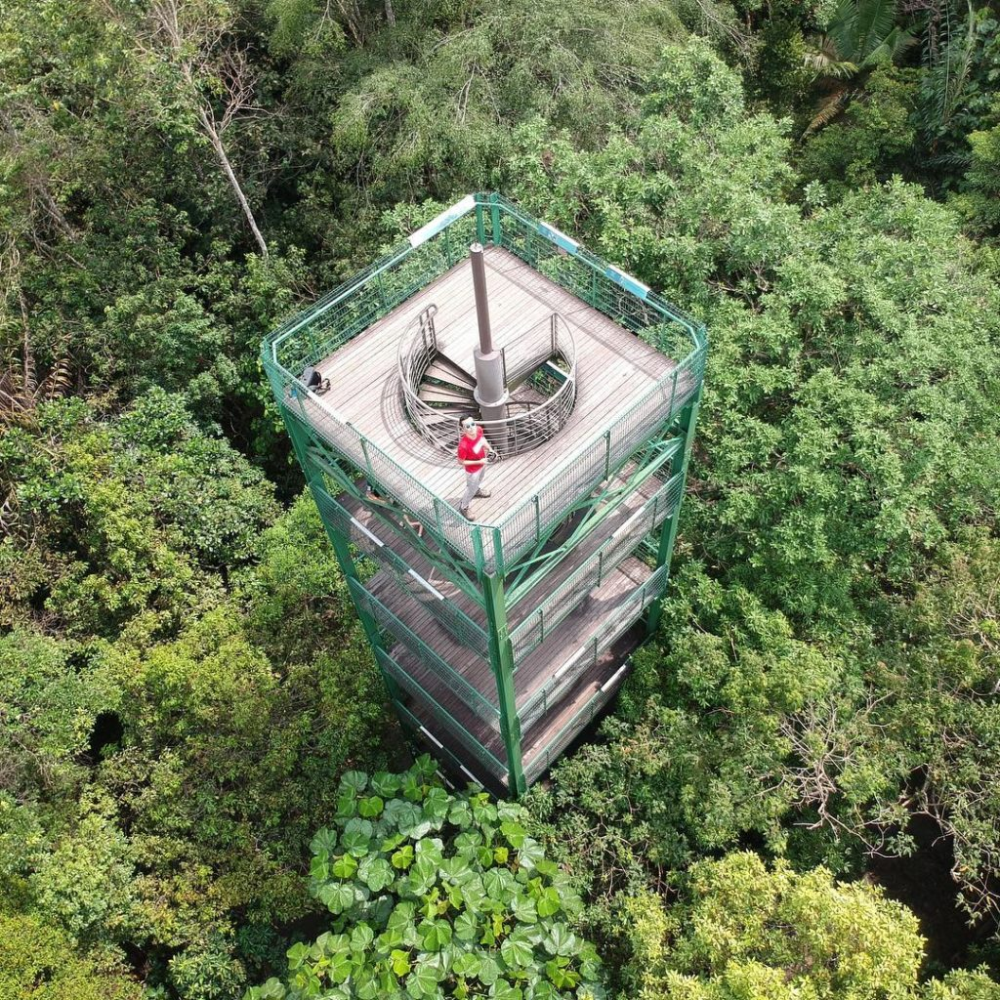
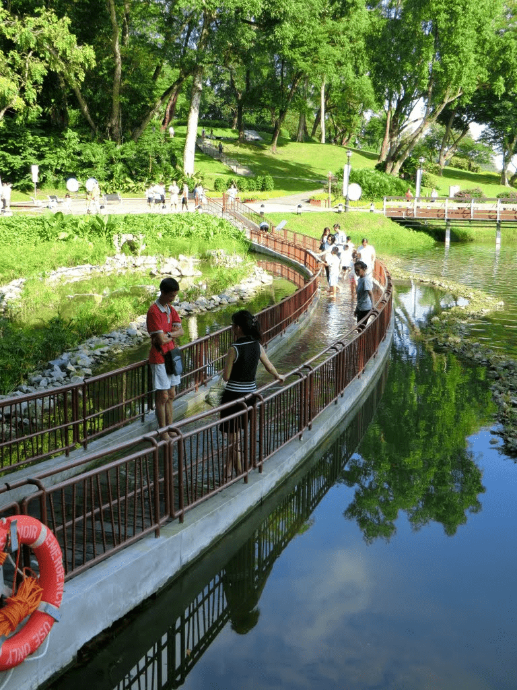
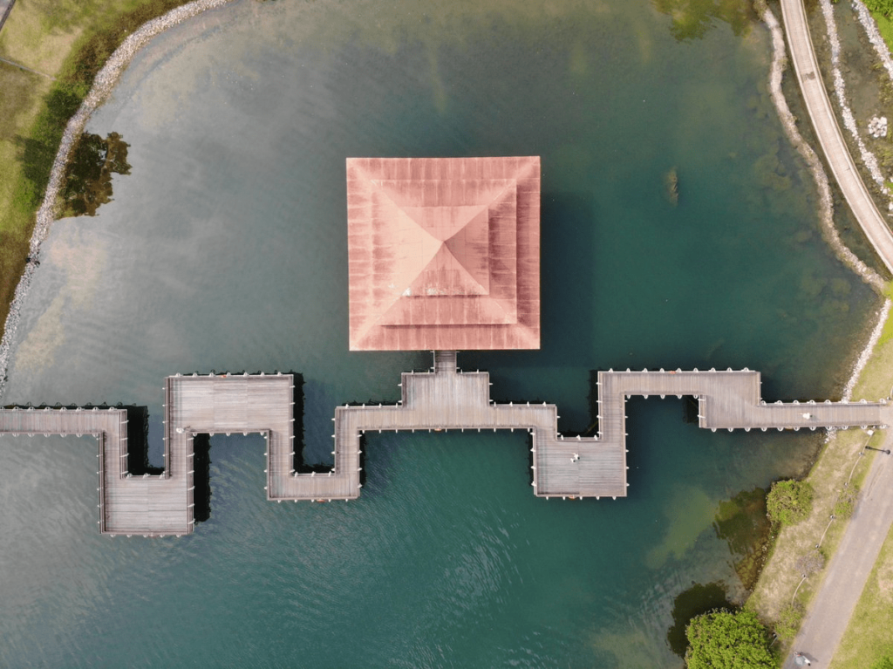
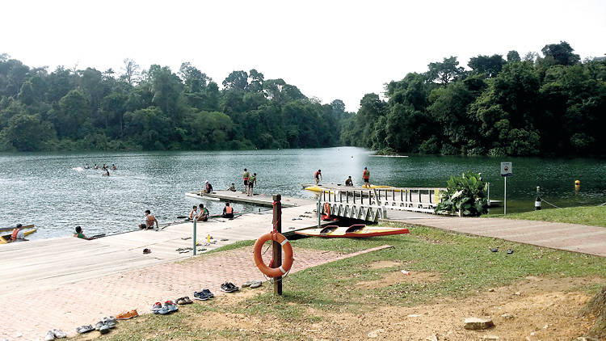

Since 1867, MacRitchie Reservoir Park has been an excellent destination for many avid nature and outdoor lovers. MacRitchie Reservoir is one of the four reservoirs located within the Central Catchment Nature Reserve, known for its rich biodiversities in the area, such as ant plant and pitcher plant, along with macaques roaming around.
It is also a wonderful place for people to try out kayaking!
Here at MacRitchie Reservoir Park, you could:
The treetop walk is a free-standing suspension bridge that connects the two highest points in MacRitchie Reservoir Park (Bukit Peirce and Bukit Kalang). It provides the visitors a bird eye's view of the community of plants and animals that live in the forest canopy and the different stages of a mature secondary forest.

The total length of the bridge is about 250m and the height varies from the forest floor, with the highest point at 25m.The distance to the entrance is approximately 4.5km from MacRitchie Reservoir and 2.5km from the carpark at Venus Drive.
A round trip that includes the Treetop Walk is about 7km to about 10km around MacRitchie Reservoir.
Click here to download a walking guide to Treetop Walk!

There are at least 6 different walking trails available suitable for all types of fitness and age groups.
In particular, the Prunus & Petai Trail of around 2km is the favourite among joggers due to its flat and planked route and accompanied by the beautiful sceneries.
You could also hike along some of the longer trails and visit the 8-storey high Jelutong Tower to see a 360 view of the MacRitchie Reservoir Park.
 You could also see the submerged bridge (during rainier seasons, the 40M-long submerged bridge gets intentionally covered ankle-deep with water from the reservoir) and the zigzag bridge along the way in the park and take your instagram-worthy pictures.
If you decided to have a change of scenery and a different approach to explore the MacRitchie Reservoir Park, consider renting a kayak from the Paddle Lodge to do so!
There are several types of boats available for rent from $12/hour. Those with a 1-star kayaking certificate may even rent a closed desk kayak or a canoe sprint kayak at $12/hr and $20/hr respectively!
Click here to download the map!
Opening Hours
Open daily from 7am-7pm
Transport
By car: The main entrance is located on Lornie Road at the intersection with Thomson Road
By bus: 52, 74, 93, 157,130, 132, 156, 157, 162, 162M, 165, 166, 167, 852, 855 and 980